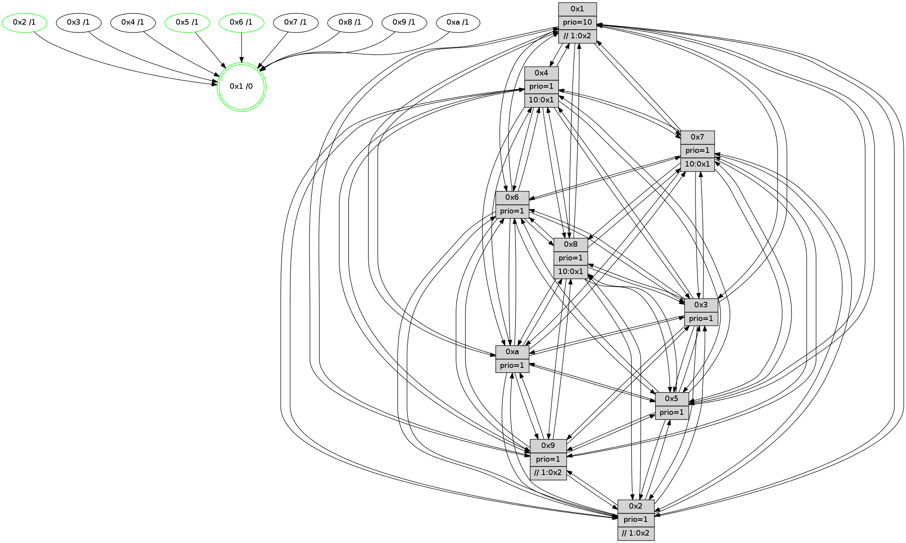

>> << IDX [start] -100 -25 -5 +0 +5 +25 +100 [955.64333415]
 Previous packets
----------------------------------------------------------------------
950.126420 beacon01(faad) #0 coord=01,02,03,04,05,06,07,0a,09,08 cycle=688.0ms assoc
-- color-indic=1 64 2f c2
950.136404 beacon02(faad) #0 coord=01,02,03,04,05,06,07,0a,09,08 cycle=688.0ms assoc 64 bc f3
950.146402 beacon03(faad) #0 coord=01,02,03,04,05,06,07,0a,09,08 cycle=688.0ms assoc 64 c6 be
950.156403 beacon04(faad) #0 coord=01,02,03,04,05,06,07,0a,09,08 cycle=688.0ms assoc 64 b1 54
950.166403 beacon05(faad) #0 coord=01,02,03,04,05,06,07,0a,09,08 cycle=688.0ms assoc 64 cb 19
950.176403 beacon06(faad) #0 coord=01,02,03,04,05,06,07,0a,09,08 cycle=688.0ms assoc 64 45 ce
950.186404 beacon07(faad) #0 coord=01,02,03,04,05,06,07,0a,09,08 cycle=688.0ms assoc 64 3f 83
950.196411 beacon0a(faad) #0 coord=01,02,03,04,05,06,07,0a,09,08 cycle=688.0ms assoc 64 4e 88
950.206407 beacon09(faad) #0 coord=01,02,03,04,05,06,07,0a,09,08 cycle=688.0ms assoc 64 c0 5f
950.216408 beacon08(faad) #0 coord=01,02,03,04,05,06,07,0a,09,08 cycle=688.0ms assoc 64 ba 12
950.228212 [Hello(7): seq=607 sym=2,3,5,6,4,8,9,10,1 sysInfo=hasWarning stat=2:2,10,8,12/3:1,12,0,11/5:4,9,4,14/6:0,5,1,6/4:1,0,14,1/8:7,6,2,0/9:2,2,0,0/10:2,9,6,1/1:2,13,12,0]
950.231573 [Color(1) seq=288 @0:0 prio=10 >>1.@2,1.@3,1.@5]
950.233462 [Hello(10): seq=540 sym=6,2,3,8,7,5,9,4,1 sysInfo=hasWarning stat=6:6,0,15,4/2:11,9,11,4/3:4,2,6,7/8:14,9,3,0/7:6,6,0,0/5:8,10,0,11/9:2,4,0,0/4:14,15,4,7/1:4,3,0,1]
950.237768 [Hello(8): seq=551 sym=5,2,3,4,9,6,7,10,1 sysInfo=hasWarning stat=5:6,14,1,11/2:5,10,12,4/3:8,15,12,11/4:6,12,10,7/9:3,3,0,0/6:9,14,10,10/7:5,5,0,0/10:2,5,4,0/1:10,5,11,0]
950.246343 [Hello(9): seq=551 sym=2,5,3,4,7,6,8,10,1 sysInfo=hasWarning stat=2:4,1,12,2/5:6,0,9,2/3:3,10,9,11/4:6,0,7,7/7:10,14,12,8/6:4,14,2,8/8:7,4,13,1/10:0,0,1,0/1:13,4,15,1]
950.250362 [Hello(4): seq=607 sym=5,7,6,2,3,9,8,10,1 sysInfo= stat=5:15,15,12,10/7:9,9,14,6/6:11,3,10,9/2:0,15,6,9/3:7,9,8,7/9:9,4,1,7/8:5,2,2,1/10:10,10,4,9/1:10,9,14,1]
----------------------------------------------------------------------
950.914550 beacon01(faad) #0 coord=01,02,03,04,05,06,07,0a,09,08 cycle=688.0ms assoc
-- color-indic=1 64 fb f7
950.924532 beacon02(faad) #0 coord=01,02,03,04,05,06,07,0a,09,08 cycle=688.0ms assoc 64 68 c6
950.934532 beacon03(faad) #0 coord=01,02,03,04,05,06,07,0a,09,08 cycle=688.0ms assoc 64 12 8b
950.944534 beacon04(faad) #0 coord=01,02,03,04,05,06,07,0a,09,08 cycle=688.0ms assoc 64 65 61
950.954533 beacon05(faad) #0 coord=01,02,03,04,05,06,07,0a,09,08 cycle=688.0ms assoc 64 1f 2c
950.964533 beacon06(faad) #0 coord=01,02,03,04,05,06,07,0a,09,08 cycle=688.0ms assoc 64 91 fb
950.974534 beacon07(faad) #0 coord=01,02,03,04,05,06,07,0a,09,08 cycle=688.0ms assoc 64 eb b6
950.984537 beacon0a(faad) #0 coord=01,02,03,04,05,06,07,0a,09,08 cycle=688.0ms assoc 64 9a bd
950.994537 beacon09(faad) #0 coord=01,02,03,04,05,06,07,0a,09,08 cycle=688.0ms assoc 64 14 6a
951.004538 beacon08(faad) #0 coord=01,02,03,04,05,06,07,0a,09,08 cycle=688.0ms assoc 64 6e 27
951.016367 [Hello(1): seq=517 sym=4,2,9,5,10,3,8,6,7 sysInfo=coloring-mode-on,ColoringModeRequestCalled stat=4:14,8,14,1/2:13,14,13,11/9:12,6,13,5/5:7,14,4,4/10:13,8,10,2/3:14,0,10,2/8:0,1,6,0/6:11,13,10,10/7:9,4,12,11]
951.019367 [Hello(3): seq=608 sym=1,7,6,2,4,8,9,10,5 sysInfo= stat=1:1,3,5,0/7:11,7,6,7/6:5,8,11,2/2:3,13,11,9/4:6,1,13,6/8:14,14,6,1/9:1,0,8,10/10:9,4,8,2/5:10,5,4,10]
951.022923 [Hello(6): seq=608 sym=3,5,4,7,9,8,10,1 sysInfo= stat=3:5,11,15,9/5:0,5,13,12/4:3,8,5,1/7:2,4,12,5/9:10,8,13,4/8:15,5,10,1/10:1,15,4,10/1:2,14,12,1]
951.025547 [STC(1) #0.126 tree-change,inconsistent-stability,stable,to-color d=0]
951.027867 [Color(6) seq=240 @0:0 prio=1]
951.032915 [Hello(5): seq=608 sym=7,6,4,3,1,9,8,10,2 sysInfo=hasWarning stat=7:5,4,1,8/6:2,3,2,0/4:4,2,14,7/3:12,5,7,9/1:1,10,0,1/9:15,12,12,4/8:2,14,10,8/10:14,0,7,4/2:1,3,0,0]
951.037023 [Hello(2): seq=604 sym=4,5,7,6,3,9,8,10,1 sysInfo=hasWarning stat=4:13,1,4,5/5:11,2,4,0/7:12,5,1,9/6:13,8,10,8/3:9,15,7,5/9:10,7,10,4/8:0,0,6,8/10:15,3,11,9/1:15,8,14,1]
951.040182 [Color(2) seq=253 @0:0 prio=1 >>1.@2,1.@3,1.@5]
951.042250 [Color(5) seq=261 @0:0 prio=1]
----------------------------------------------------------------------
951.702681 beacon01(faad) #0 coord=01,02,03,04,05,06,07,0a,09,08 cycle=688.0ms assoc
-- color-indic=1 64 47 f2
951.712663 beacon02(faad) #0 coord=01,02,03,04,05,06,07,0a,09,08 cycle=688.0ms assoc 64 d4 c3
951.722664 beacon03(faad) #0 coord=01,02,03,04,05,06,07,0a,09,08 cycle=688.0ms assoc 64 ae 8e
951.732664 beacon04(faad) #0 coord=01,02,03,04,05,06,07,0a,09,08 cycle=688.0ms assoc 64 d9 64
951.742663 beacon05(faad) #0 coord=01,02,03,04,05,06,07,0a,09,08 cycle=688.0ms assoc 64 a3 29
951.752663 beacon06(faad) #0 coord=01,02,03,04,05,06,07,0a,09,08 cycle=688.0ms assoc 64 2d fe
951.762666 beacon07(faad) #0 coord=01,02,03,04,05,06,07,0a,09,08 cycle=688.0ms assoc 64 57 b3
951.772669 beacon0a(faad) #0 coord=01,02,03,04,05,06,07,0a,09,08 cycle=688.0ms assoc 64 26 b8
951.782669 beacon09(faad) #0 coord=01,02,03,04,05,06,07,0a,09,08 cycle=688.0ms assoc 64 a8 6f
951.792669 beacon08(faad) #0 coord=01,02,03,04,05,06,07,0a,09,08 cycle=688.0ms assoc 64 d2 22
951.804247 [STC(3)->1 #0.126 tree-change,inconsistent-stability,to-color d=1]
951.805670 [Hello(7): seq=608 sym=2,3,5,6,4,8,9,10,1 sysInfo=hasWarning stat=2:3,11,8,12/3:2,12,0,11/5:5,10,4,14/6:1,6,1,6/4:2,0,14,1/8:8,6,2,0/9:3,2,0,0/10:3,9,6,1/1:3,14,13,0]
951.808368 [Hello(8): seq=552 sym=5,2,3,4,9,6,7,10,1 sysInfo=hasWarning stat=5:7,15,1,11/2:6,11,12,4/3:9,15,12,11/4:7,12,10,7/9:4,3,0,0/6:10,15,10,10/7:5,5,0,0/10:2,5,4,0/1:11,5,12,0]
951.811841 [STC(8)->1 #0.126 tree-change,inconsistent-stability,to-color d=1]
951.813244 [STC(7)->1 #0.126 tree-change,inconsistent-stability,to-color d=1]
951.816331 [Color(1) seq=289 @0:0 prio=10 >>1.@2,1.@3,1.@5]
951.818103 [Hello(10): seq=541 sym=6,2,3,8,7,5,9,4,1 sysInfo=hasWarning stat=6:7,1,15,4/2:12,10,11,4/3:5,2,6,7/8:15,9,3,0/7:6,6,0,0/5:9,11,0,11/9:3,4,0,0/4:15,15,4,7/1:5,3,1,1]
951.821893 [STC(10)->1 #0.126 tree-change,inconsistent-stability,to-color d=1]
951.823573 [Hello(9): seq=552 sym=2,5,3,4,7,6,8,10,1 sysInfo=hasWarning stat=2:5,2,12,2/5:7,1,9,2/3:4,10,9,11/4:7,0,7,7/7:10,14,12,8/6:5,15,2,8/8:7,4,13,1/10:0,0,1,0/1:14,4,0,1]
951.827043 [STC(9)->1 #0.126 tree-change,inconsistent-stability,to-color d=1]
951.828477 [Hello(4): seq=608 sym=5,7,6,2,3,9,8,10,1 sysInfo= stat=5:0,0,12,10/7:9,9,14,6/6:12,4,10,9/2:1,0,6,9/3:8,9,8,7/9:9,4,1,7/8:5,2,2,1/10:10,10,4,9/1:11,9,15,1]
951.833526 [STC(4)->1 #0.126 to-color d=1]
----------------------------------------------------------------------
952.490812 beacon01(faad) #0 coord=01,02,03,04,05,06,07,0a,09,08 cycle=688.0ms assoc
-- color-indic=1 64 83 fc
952.500793 beacon02(faad) #0 coord=01,02,03,04,05,06,07,0a,09,08 cycle=688.0ms assoc 64 10 cd
952.510794 beacon03(faad) #0 coord=01,02,03,04,05,06,07,0a,09,08 cycle=688.0ms assoc 64 6a 80
952.520796 beacon04(faad) #0 coord=01,02,03,04,05,06,07,0a,09,08 cycle=688.0ms assoc 64 1d 6a
952.530794 beacon05(faad) #0 coord=01,02,03,04,05,06,07,0a,09,08 cycle=688.0ms assoc 64 67 27
952.540795 beacon06(faad) #0 coord=01,02,03,04,05,06,07,0a,09,08 cycle=688.0ms assoc 64 e9 f0
952.550795 beacon07(faad) #0 coord=01,02,03,04,05,06,07,0a,09,08 cycle=688.0ms assoc 64 93 bd
952.560799 beacon0a(faad) #0 coord=01,02,03,04,05,06,07,0a,09,08 cycle=688.0ms assoc 64 e2 b6
952.570799 beacon09(faad) #0 coord=01,02,03,04,05,06,07,0a,09,08 cycle=688.0ms assoc 64 6c 61
952.580801 beacon08(faad) #0 coord=01,02,03,04,05,06,07,0a,09,08 cycle=688.0ms assoc 64 16 2c
952.591965 [Hello(3): seq=609 sym=1,7,6,2,4,8,9,10,5 sysInfo= stat=1:1,4,6,0/7:12,7,7,7/6:6,9,11,2/2:4,14,11,9/4:7,1,14,6/8:15,14,7,1/9:2,0,9,10/10:10,4,9,2/5:11,6,4,10]
952.594738 [Hello(1): seq=518 sym=4,2,9,5,10,3,8,6,7 sysInfo=coloring-mode-on,ColoringModeRequestCalled stat=4:15,8,15,1/2:14,15,13,11/9:13,6,14,5/5:8,15,4,4/10:14,8,11,2/3:14,0,11,2/8:0,1,6,0/6:11,14,10,10/7:10,4,12,11]
952.597471 [Hello(6): seq=609 sym=2,3,5,4,7,9,8,10,1 sysInfo= stat=2:0,1,0,0/3:5,11,0,9/5:1,6,13,12/4:4,8,6,1/7:3,4,13,5/9:11,8,14,4/8:0,5,11,1/10:2,15,5,10/1:3,15,12,1]
952.602230 [Color(6) seq=241 @0:0 prio=1]
952.604307 [Hello(5): seq=609 sym=7,6,4,3,1,9,8,10,2 sysInfo=hasWarning stat=7:6,4,2,8/6:2,3,2,0/4:5,2,15,7/3:13,5,8,9/1:2,11,0,1/9:0,12,13,4/8:3,14,11,8/10:15,0,8,4/2:1,3,0,0]
952.608928 [Hello(2): seq=605 sym=4,5,7,6,3,9,8,10,1 sysInfo=hasWarning stat=4:14,1,5,5/5:11,3,4,0/7:13,5,2,9/6:13,8,10,8/3:10,15,8,5/9:11,7,11,4/8:1,0,7,8/10:0,3,12,9/1:0,9,14,1]
952.611733 [Color(5) seq=262 @0:0 prio=1]
952.615734 [Color(2) seq=254 @0:0 prio=1 >>1.@2,1.@3,1.@5]
----------------------------------------------------------------------
953.278942 beacon01(faad) #0 coord=01,02,03,04,05,06,07,0a,09,08 cycle=688.0ms assoc
-- color-indic=1 64 3f f9
953.288924 beacon02(faad) #0 coord=01,02,03,04,05,06,07,0a,09,08 cycle=688.0ms assoc 64 ac c8
953.298924 beacon03(faad) #0 coord=01,02,03,04,05,06,07,0a,09,08 cycle=688.0ms assoc 64 d6 85
953.308924 beacon04(faad) #0 coord=01,02,03,04,05,06,07,0a,09,08 cycle=688.0ms assoc 64 a1 6f
953.318925 beacon05(faad) #0 coord=01,02,03,04,05,06,07,0a,09,08 cycle=688.0ms assoc 64 db 22
953.328926 beacon06(faad) #0 coord=01,02,03,04,05,06,07,0a,09,08 cycle=688.0ms assoc 64 55 f5
953.338926 beacon07(faad) #0 coord=01,02,03,04,05,06,07,0a,09,08 cycle=688.0ms assoc 64 2f b8
953.348929 beacon0a(faad) #0 coord=01,02,03,04,05,06,07,0a,09,08 cycle=688.0ms assoc 64 5e b3
953.358929 beacon09(faad) #0 coord=01,02,03,04,05,06,07,0a,09,08 cycle=688.0ms assoc 64 d0 64
953.368929 beacon08(faad) #0 coord=01,02,03,04,05,06,07,0a,09,08 cycle=688.0ms assoc 64 aa 29
953.380090 [Hello(7): seq=609 sym=2,3,5,6,4,8,9,10,1 sysInfo=hasWarning stat=2:4,12,8,12/3:3,12,0,11/5:6,11,4,14/6:2,7,1,6/4:3,0,15,1/8:8,6,2,0/9:4,2,1,0/10:4,9,7,1/1:4,15,13,0]
953.384511 [Hello(8): seq=553 sym=5,2,3,4,9,6,7,10,1 sysInfo=hasWarning stat=5:8,0,1,11/2:7,12,12,4/3:10,15,12,11/4:8,12,11,7/9:5,3,1,0/6:11,0,10,10/7:5,5,1,0/10:3,5,5,0/1:12,6,12,0]
953.387071 [Hello(10): seq=542 sym=6,2,3,8,7,5,9,4,1 sysInfo=hasWarning stat=6:8,2,15,4/2:13,11,11,4/3:6,2,6,7/8:15,9,3,0/7:6,6,0,0/5:10,12,0,11/9:4,4,1,0/4:0,15,5,7/1:6,3,1,1]
953.389981 [Hello(4): seq=609 sym=5,7,6,2,3,9,8,10,1 sysInfo= stat=5:1,1,12,10/7:9,9,14,6/6:13,5,10,9/2:2,1,6,9/3:9,9,8,7/9:9,4,1,7/8:5,2,2,1/10:10,10,4,9/1:12,9,15,1]
953.396292 [Hello(9): seq=553 sym=2,5,3,4,7,6,8,10,1 sysInfo=hasWarning stat=2:6,3,12,2/5:8,2,9,2/3:5,10,9,11/4:8,0,8,7/7:10,14,12,8/6:6,0,2,8/8:7,4,13,1/10:0,0,1,0/1:15,4,0,1]
953.405116 [Color(1) seq=290 @0:0 prio=10 >>1.@2,1.@3,1.@5]
----------------------------------------------------------------------
954.067073 beacon01(faad) #0 coord=01,02,03,04,05,06,07,0a,09,08 cycle=688.0ms assoc
-- color-indic=1 64 0b e1
954.077057 beacon02(faad) #0 coord=01,02,03,04,05,06,07,0a,09,08 cycle=688.0ms assoc 64 98 d0
954.087056 beacon03(faad) #0 coord=01,02,03,04,05,06,07,0a,09,08 cycle=688.0ms assoc 64 e2 9d
954.097055 beacon04(faad) #0 coord=01,02,03,04,05,06,07,0a,09,08 cycle=688.0ms assoc 64 95 77
954.107055 beacon05(faad) #0 coord=01,02,03,04,05,06,07,0a,09,08 cycle=688.0ms assoc 64 ef 3a
954.117056 beacon06(faad) #0 coord=01,02,03,04,05,06,07,0a,09,08 cycle=688.0ms assoc 64 61 ed
954.127056 beacon07(faad) #0 coord=01,02,03,04,05,06,07,0a,09,08 cycle=688.0ms assoc 64 1b a0
954.137063 beacon0a(faad) #0 coord=01,02,03,04,05,06,07,0a,09,08 cycle=688.0ms assoc 64 6a ab
954.147061 beacon09(faad) #0 coord=01,02,03,04,05,06,07,0a,09,08 cycle=688.0ms assoc 64 e4 7c
954.157062 beacon08(faad) #0 coord=01,02,03,04,05,06,07,0a,09,08 cycle=688.0ms assoc 64 9e 31
954.168007 [Hello(1): seq=519 sym=4,2,9,5,10,3,8,6,7 sysInfo=coloring-mode-on,ColoringModeRequestCalled stat=4:15,8,15,1/2:15,0,13,11/9:13,6,14,5/5:9,0,4,4/10:14,8,11,2/3:14,0,11,2/8:0,1,6,0/6:12,15,10,10/7:11,4,12,11]
954.170466 [Hello(3): seq=610 sym=1,7,6,2,4,8,9,10,5 sysInfo= stat=1:2,5,6,0/7:13,7,7,7/6:7,10,11,2/2:5,15,11,9/4:8,1,14,6/8:0,14,7,1/9:3,0,9,10/10:11,4,9,2/5:12,7,4,10]
954.174473 [Hello(2): seq=606 sym=4,5,7,6,3,9,8,10,1 sysInfo=hasWarning stat=4:15,1,5,5/5:11,3,4,0/7:14,5,2,9/6:13,8,10,8/3:11,15,8,5/9:12,7,11,4/8:2,0,7,8/10:1,3,12,9/1:1,10,14,1]
954.177614 [Hello(5): seq=610 sym=7,6,4,3,1,9,8,10,2 sysInfo=hasWarning stat=7:7,4,2,8/6:2,3,2,0/4:6,2,15,7/3:14,5,8,9/1:3,12,0,1/9:1,12,13,4/8:4,14,11,8/10:0,0,8,4/2:1,4,0,0]
954.180422 [Color(5) seq=263 @0:0 prio=1]
954.184585 [Color(2) seq=255 @0:0 prio=1 >>1.@2,1.@3,1.@5]
954.188633 [Hello(6): seq=610 sym=2,3,5,4,7,9,8,10,1 sysInfo= stat=2:1,2,0,0/3:6,11,0,9/5:2,7,13,12/4:5,8,6,1/7:4,4,13,5/9:12,8,14,4/8:1,5,11,1/10:3,15,5,10/1:4,0,12,1]
954.192750 [Color(6) seq=242 @0:0 prio=1]
----------------------------------------------------------------------
954.855202 beacon01(faad) #0 coord=01,02,03,04,05,06,07,0a,09,08 cycle=688.0ms assoc
-- color-indic=1 64 b7 e4
954.865184 beacon02(faad) #0 coord=01,02,03,04,05,06,07,0a,09,08 cycle=688.0ms assoc 64 24 d5
954.875185 beacon03(faad) #0 coord=01,02,03,04,05,06,07,0a,09,08 cycle=688.0ms assoc 64 5e 98
954.885185 beacon04(faad) #0 coord=01,02,03,04,05,06,07,0a,09,08 cycle=688.0ms assoc 64 29 72
954.895186 beacon05(faad) #0 coord=01,02,03,04,05,06,07,0a,09,08 cycle=688.0ms assoc 64 53 3f
954.905185 beacon06(faad) #0 coord=01,02,03,04,05,06,07,0a,09,08 cycle=688.0ms assoc 64 dd e8
954.915185 beacon07(faad) #0 coord=01,02,03,04,05,06,07,0a,09,08 cycle=688.0ms assoc 64 a7 a5
954.925189 beacon0a(faad) #0 coord=01,02,03,04,05,06,07,0a,09,08 cycle=688.0ms assoc 64 d6 ae
954.935190 beacon09(faad) #0 coord=01,02,03,04,05,06,07,0a,09,08 cycle=688.0ms assoc 64 58 79
954.945190 beacon08(faad) #0 coord=01,02,03,04,05,06,07,0a,09,08 cycle=688.0ms assoc 64 22 34
954.956367 [Hello(4): seq=610 sym=5,7,6,2,3,9,8,10,1 sysInfo= stat=5:2,2,12,10/7:9,9,14,6/6:14,6,10,9/2:3,2,6,9/3:10,9,8,7/9:10,4,1,7/8:5,2,2,1/10:10,10,4,9/1:13,10,15,1]
954.959999 [Hello(7): seq=610 sym=2,3,5,6,4,8,9,10,1 sysInfo=hasWarning stat=2:5,13,8,12/3:4,12,0,11/5:7,12,4,14/6:3,8,1,6/4:4,0,15,1/8:9,6,2,0/9:5,2,1,0/10:5,9,7,1/1:5,0,13,0]
954.962893 [Color(1) seq=291 @0:0 prio=10 >>1.@2,1.@3,1.@5]
954.965590 [Hello(10): seq=543 sym=6,2,3,8,7,5,9,4,1 sysInfo=hasWarning stat=6:9,3,15,4/2:14,12,11,4/3:7,2,6,7/8:15,9,3,0/7:6,6,0,0/5:11,13,0,11/9:5,4,1,0/4:1,15,5,7/1:7,4,1,1]
954.968253 [Hello(9): seq=554 sym=2,5,3,4,7,6,8,10,1 sysInfo=hasWarning stat=2:7,4,12,2/5:9,3,9,2/3:6,10,9,11/4:8,0,8,7/7:10,14,12,8/6:7,1,2,8/8:7,4,13,1/10:0,0,1,0/1:0,5,0,1]
954.972448 [Hello(8): seq=554 sym=5,2,3,4,9,6,7,10,1 sysInfo=hasWarning stat=5:9,1,1,11/2:8,13,12,4/3:11,15,12,11/4:9,12,11,7/9:6,3,1,0/6:12,1,10,10/7:5,5,1,0/10:4,5,5,0/1:13,7,12,0]